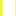

<!doctype html>
<html lang="es">
    <head>
        <meta charset="utf-8">
        <meta http-equiv="X-UA-Compatible" content="IE=edge">
        <meta name="viewport" content="initial-scale=1,user-scalable=no,maximum-scale=1,width=device-width">
        <meta name="mobile-web-app-capable" content="yes">
        <meta name="apple-mobile-web-app-capable" content="yes">
        <link rel="stylesheet" href="css/leaflet.css">
        <link rel="stylesheet" href="css/qgis2web.css"><link rel="stylesheet" href="css/fontawesome-all.min.css">
        <link rel="stylesheet" href="css/MarkerCluster.css">
        <link rel="stylesheet" href="css/MarkerCluster.Default.css">
        <style>
        #map {
            width:  100%;
            height: 725px;
        }
        </style>
        <title></title>
    </head>
    <body>
        <div id="map">
        </div>
        <script src="js/qgis2web_expressions.js"></script>
        <script src="js/leaflet.js"></script>
        <script src="js/leaflet.rotatedMarker.js"></script>
        <script src="js/leaflet.pattern.js"></script>
        <script src="js/leaflet-hash.js"></script>
        <script src="js/Autolinker.min.js"></script>
        <script src="js/rbush.min.js"></script>
        <script src="js/labelgun.min.js"></script>
        <script src="js/labels.js"></script>
        <script src="js/leaflet.markercluster.js"></script>
        <script src="data/ZonaDeslizamiento_6.js"></script>
        <script src="data/Deslizamientosasociadosflujosdedetritos_7.js"></script>
        <script src="data/readedeposito_8.js"></script>
        <script src="data/readeslizada_9.js"></script>
        <script src="data/Edificaciones_10.js"></script>
        <script src="data/Escarpededeslizamiento_11.js"></script>
        <script src="data/Coronadedeslizamiento_12.js"></script>
        <script src="data/Accesovial_13.js"></script>
        <script src="data/Antenas_14.js"></script>
        <script>
        var map = L.map('map', {
            zoomControl:true, maxZoom:28, minZoom:10
        })
        var hash = new L.Hash(map);
        map.attributionControl.setPrefix('<a href="https://www.linkedin.com/in/dennis-chavarría-córdoba-a5a291ab" target="_blank">Geog. Dennis Chavarría Córdoba</a> &middot; <a href="https://leafletjs.com" title="A JS library for interactive maps">Leaflet</a> &middot; <a href="https://qgis.org">QGIS</a> &middot; <a href="http://www.snitcr.go.cr/">SNIT</a> &middot; <a href="https://www.planet.com/">Planet Labs</a>');
        var autolinker = new Autolinker({truncate: {length: 30, location: 'smart'}});
        var bounds_group = new L.featureGroup([]);
        function setBounds() {
            if (bounds_group.getLayers().length) {
                map.fitBounds(bounds_group.getBounds());
            }
        }
        map.createPane('pane_GoogleHybrid_0');
        map.getPane('pane_GoogleHybrid_0').style.zIndex = 400;
        var layer_GoogleHybrid_0 = L.tileLayer('https://mt1.google.com/vt/lyrs=y&x={x}&y={y}&z={z}', {
            pane: 'pane_GoogleHybrid_0',
            opacity: 1.0,
            attribution: '<a href="https://www.google.at/permissions/geoguidelines/attr-guide.html">Map data ©2015 Google</a>',
            minZoom: 10,
            maxZoom: 28,
            minNativeZoom: 0,
            maxNativeZoom: 20
        });
        layer_GoogleHybrid_0;
        map.addLayer(layer_GoogleHybrid_0);
        map.createPane('pane_OrtofotoRGB_1');
        map.getPane('pane_OrtofotoRGB_1').style.zIndex = 401;
        var img_OrtofotoRGB_1 = 'data/OrtofotoRGB_1.png';
        var img_bounds_OrtofotoRGB_1 = [[9.966327345670338,-83.8737217505409],[9.981222376748143,-83.85580573479048]];
        var layer_OrtofotoRGB_1 = new L.imageOverlay(img_OrtofotoRGB_1,
                                              img_bounds_OrtofotoRGB_1,
                                              {pane: 'pane_OrtofotoRGB_1'});
        bounds_group.addLayer(layer_OrtofotoRGB_1);
        map.addLayer(layer_OrtofotoRGB_1);
        map.createPane('pane_03052020PreeventoDeslizamientoSectorAntenasNIR_2');
        map.getPane('pane_03052020PreeventoDeslizamientoSectorAntenasNIR_2').style.zIndex = 402;
        var img_03052020PreeventoDeslizamientoSectorAntenasNIR_2 = 'data/03052020PreeventoDeslizamientoSectorAntenasNIR_2.png';
        var img_bounds_03052020PreeventoDeslizamientoSectorAntenasNIR_2 = [[9.966763246993109,-83.87357237195151],[9.981059113835855,-83.85600782475431]];
        var layer_03052020PreeventoDeslizamientoSectorAntenasNIR_2 = new L.imageOverlay(img_03052020PreeventoDeslizamientoSectorAntenasNIR_2,
                                              img_bounds_03052020PreeventoDeslizamientoSectorAntenasNIR_2,
                                              {pane: 'pane_03052020PreeventoDeslizamientoSectorAntenasNIR_2'});
        bounds_group.addLayer(layer_03052020PreeventoDeslizamientoSectorAntenasNIR_2);
        map.addLayer(layer_03052020PreeventoDeslizamientoSectorAntenasNIR_2);
        map.createPane('pane_03052020PreeventoDeslizamientoSectorAntenasRGB_3');
        map.getPane('pane_03052020PreeventoDeslizamientoSectorAntenasRGB_3').style.zIndex = 403;
        var img_03052020PreeventoDeslizamientoSectorAntenasRGB_3 = 'data/03052020PreeventoDeslizamientoSectorAntenasRGB_3.png';
        var img_bounds_03052020PreeventoDeslizamientoSectorAntenasRGB_3 = [[9.966763246993109,-83.87357237195151],[9.981059113835855,-83.85600782475431]];
        var layer_03052020PreeventoDeslizamientoSectorAntenasRGB_3 = new L.imageOverlay(img_03052020PreeventoDeslizamientoSectorAntenasRGB_3,
                                              img_bounds_03052020PreeventoDeslizamientoSectorAntenasRGB_3,
                                              {pane: 'pane_03052020PreeventoDeslizamientoSectorAntenasRGB_3'});
        bounds_group.addLayer(layer_03052020PreeventoDeslizamientoSectorAntenasRGB_3);
        map.addLayer(layer_03052020PreeventoDeslizamientoSectorAntenasRGB_3);
        map.createPane('pane_31082020PosteventoDeslizamientoSectorAntenasNIR_4');
        map.getPane('pane_31082020PosteventoDeslizamientoSectorAntenasNIR_4').style.zIndex = 404;
        var img_31082020PosteventoDeslizamientoSectorAntenasNIR_4 = 'data/31082020PosteventoDeslizamientoSectorAntenasNIR_4.png';
        var img_bounds_31082020PosteventoDeslizamientoSectorAntenasNIR_4 = [[9.966763246993109,-83.87357237195151],[9.981059113835855,-83.85600782475431]];
        var layer_31082020PosteventoDeslizamientoSectorAntenasNIR_4 = new L.imageOverlay(img_31082020PosteventoDeslizamientoSectorAntenasNIR_4,
                                              img_bounds_31082020PosteventoDeslizamientoSectorAntenasNIR_4,
                                              {pane: 'pane_31082020PosteventoDeslizamientoSectorAntenasNIR_4'});
        bounds_group.addLayer(layer_31082020PosteventoDeslizamientoSectorAntenasNIR_4);
        map.addLayer(layer_31082020PosteventoDeslizamientoSectorAntenasNIR_4);
        map.createPane('pane_31082020PosteventoDeslizamientoSectorAntenasRGB_5');
        map.getPane('pane_31082020PosteventoDeslizamientoSectorAntenasRGB_5').style.zIndex = 405;
        var img_31082020PosteventoDeslizamientoSectorAntenasRGB_5 = 'data/31082020PosteventoDeslizamientoSectorAntenasRGB_5.png';
        var img_bounds_31082020PosteventoDeslizamientoSectorAntenasRGB_5 = [[9.966763246993109,-83.87357237195151],[9.981059113835855,-83.85600782475431]];
        var layer_31082020PosteventoDeslizamientoSectorAntenasRGB_5 = new L.imageOverlay(img_31082020PosteventoDeslizamientoSectorAntenasRGB_5,
                                              img_bounds_31082020PosteventoDeslizamientoSectorAntenasRGB_5,
                                              {pane: 'pane_31082020PosteventoDeslizamientoSectorAntenasRGB_5'});
        bounds_group.addLayer(layer_31082020PosteventoDeslizamientoSectorAntenasRGB_5);
        map.addLayer(layer_31082020PosteventoDeslizamientoSectorAntenasRGB_5);
        function pop_ZonaDeslizamiento_6(feature, layer) {
            var popupContent = '<table>\
                    <tr>\
                        <td colspan="2"><strong>Extensión</strong><br />' + (feature.properties['Area_hec'] !== null ? autolinker.link(feature.properties['Area_hec'].toLocaleString()) : '') + '</td>\
                    </tr>\
                </table>';
            layer.bindPopup(popupContent, {maxHeight: 400});
        }

        function style_ZonaDeslizamiento_6_0() {
            return {
                pane: 'pane_ZonaDeslizamiento_6',
                opacity: 1,
                color: 'rgba(38,89,128,0.7)',
                dashArray: '',
                lineCap: 'butt',
                lineJoin: 'miter',
                weight: 2.0, 
                fill: true,
                fillOpacity: 1,
                fillColor: 'rgba(55,138,200,0.7)',
                interactive: true,
            }
        }
        map.createPane('pane_ZonaDeslizamiento_6');
        map.getPane('pane_ZonaDeslizamiento_6').style.zIndex = 406;
        map.getPane('pane_ZonaDeslizamiento_6').style['mix-blend-mode'] = 'normal';
        var layer_ZonaDeslizamiento_6 = new L.geoJson(json_ZonaDeslizamiento_6, {
            attribution: '',
            interactive: true,
            dataVar: 'json_ZonaDeslizamiento_6',
            layerName: 'layer_ZonaDeslizamiento_6',
            pane: 'pane_ZonaDeslizamiento_6',
            onEachFeature: pop_ZonaDeslizamiento_6,
            style: style_ZonaDeslizamiento_6_0,
        });
        bounds_group.addLayer(layer_ZonaDeslizamiento_6);
        map.addLayer(layer_ZonaDeslizamiento_6);
        function pop_Deslizamientosasociadosflujosdedetritos_7(feature, layer) {
            var popupContent = '<table>\
                    <tr>\
                        <td colspan="2"><strong>Extensión</strong><br />' + (feature.properties['Area_hect'] !== null ? autolinker.link(feature.properties['Area_hect'].toLocaleString()) : '') + '</td>\
                    </tr>\
                </table>';
            layer.bindPopup(popupContent, {maxHeight: 400});
        }

        function style_Deslizamientosasociadosflujosdedetritos_7_0() {
            return {
                pane: 'pane_Deslizamientosasociadosflujosdedetritos_7',
                opacity: 1,
                color: 'rgba(226,155,12,0.8)',
                dashArray: '',
                lineCap: 'butt',
                lineJoin: 'miter',
                weight: 2.0, 
                fill: true,
                fillOpacity: 1,
                fillColor: 'rgba(255,197,81,0.8)',
                interactive: true,
            }
        }
        map.createPane('pane_Deslizamientosasociadosflujosdedetritos_7');
        map.getPane('pane_Deslizamientosasociadosflujosdedetritos_7').style.zIndex = 407;
        map.getPane('pane_Deslizamientosasociadosflujosdedetritos_7').style['mix-blend-mode'] = 'normal';
        var layer_Deslizamientosasociadosflujosdedetritos_7 = new L.geoJson(json_Deslizamientosasociadosflujosdedetritos_7, {
            attribution: '',
            interactive: true,
            dataVar: 'json_Deslizamientosasociadosflujosdedetritos_7',
            layerName: 'layer_Deslizamientosasociadosflujosdedetritos_7',
            pane: 'pane_Deslizamientosasociadosflujosdedetritos_7',
            onEachFeature: pop_Deslizamientosasociadosflujosdedetritos_7,
            style: style_Deslizamientosasociadosflujosdedetritos_7_0,
        });
        bounds_group.addLayer(layer_Deslizamientosasociadosflujosdedetritos_7);
        map.addLayer(layer_Deslizamientosasociadosflujosdedetritos_7);
        function pop_readedeposito_8(feature, layer) {
            var popupContent = '<table>\
                    <tr>\
                        <td colspan="2"><strong>Extensión</strong><br />' + (feature.properties['Area_hect'] !== null ? autolinker.link(feature.properties['Area_hect'].toLocaleString()) : '') + '</td>\
                    </tr>\
                </table>';
            layer.bindPopup(popupContent, {maxHeight: 400});
        }

        function style_readedeposito_8_0() {
            return {
                pane: 'pane_readedeposito_8',
                opacity: 1,
                color: 'rgba(193,116,0,0.8)',
                dashArray: '',
                lineCap: 'butt',
                lineJoin: 'miter',
                weight: 2.0, 
                fill: true,
                fillOpacity: 1,
                fillColor: 'rgba(199,172,132,0.8)',
                interactive: true,
            }
        }
        map.createPane('pane_readedeposito_8');
        map.getPane('pane_readedeposito_8').style.zIndex = 408;
        map.getPane('pane_readedeposito_8').style['mix-blend-mode'] = 'normal';
        var layer_readedeposito_8 = new L.geoJson(json_readedeposito_8, {
            attribution: '',
            interactive: true,
            dataVar: 'json_readedeposito_8',
            layerName: 'layer_readedeposito_8',
            pane: 'pane_readedeposito_8',
            onEachFeature: pop_readedeposito_8,
            style: style_readedeposito_8_0,
        });
        bounds_group.addLayer(layer_readedeposito_8);
        map.addLayer(layer_readedeposito_8);
        function pop_readeslizada_9(feature, layer) {
            var popupContent = '<table>\
                    <tr>\
                        <td colspan="2"><strong>Extensión</strong><br />' + (feature.properties['Area_hect'] !== null ? autolinker.link(feature.properties['Area_hect'].toLocaleString()) : '') + '</td>\
                    </tr>\
                </table>';
            layer.bindPopup(popupContent, {maxHeight: 400});
        }

        function style_readeslizada_9_0() {
            return {
                pane: 'pane_readeslizada_9',
                opacity: 1,
                color: 'rgba(219,16,12,0.8)',
                dashArray: '',
                lineCap: 'butt',
                lineJoin: 'miter',
                weight: 2.0, 
                fill: true,
                fillOpacity: 1,
                fillColor: 'rgba(255,105,103,0.8)',
                interactive: true,
            }
        }
        map.createPane('pane_readeslizada_9');
        map.getPane('pane_readeslizada_9').style.zIndex = 409;
        map.getPane('pane_readeslizada_9').style['mix-blend-mode'] = 'normal';
        var layer_readeslizada_9 = new L.geoJson(json_readeslizada_9, {
            attribution: '',
            interactive: true,
            dataVar: 'json_readeslizada_9',
            layerName: 'layer_readeslizada_9',
            pane: 'pane_readeslizada_9',
            onEachFeature: pop_readeslizada_9,
            style: style_readeslizada_9_0,
        });
        bounds_group.addLayer(layer_readeslizada_9);
        map.addLayer(layer_readeslizada_9);
        function pop_Edificaciones_10(feature, layer) {
        }

        function style_Edificaciones_10_0() {
            return {
                pane: 'pane_Edificaciones_10',
                opacity: 1,
                color: 'rgba(165,15,165,1.0)',
                dashArray: '',
                lineCap: 'butt',
                lineJoin: 'miter',
                weight: 2.0, 
                fill: true,
                fillOpacity: 1,
                fillColor: 'rgba(238,35,238,1.0)',
                interactive: false,
            }
        }
        map.createPane('pane_Edificaciones_10');
        map.getPane('pane_Edificaciones_10').style.zIndex = 410;
        map.getPane('pane_Edificaciones_10').style['mix-blend-mode'] = 'normal';
        var layer_Edificaciones_10 = new L.geoJson(json_Edificaciones_10, {
            attribution: '',
            interactive: false,
            dataVar: 'json_Edificaciones_10',
            layerName: 'layer_Edificaciones_10',
            pane: 'pane_Edificaciones_10',
            onEachFeature: pop_Edificaciones_10,
            style: style_Edificaciones_10_0,
        });
        bounds_group.addLayer(layer_Edificaciones_10);
        map.addLayer(layer_Edificaciones_10);
        function pop_Escarpededeslizamiento_11(feature, layer) {
        }

        var pattern_Escarpededeslizamiento_11_0 = new L.StripePattern({
            weight: 1.1,
            spaceWeight: 4.0,
            color: '#f1f439',
            opacity: 1.0,
            spaceOpacity: 0,
            angle: 270
        });
        pattern_Escarpededeslizamiento_11_0.addTo(map);
        function style_Escarpededeslizamiento_11_0() {
            return {
                pane: 'pane_Escarpededeslizamiento_11',
                stroke: false,
                fillOpacity: 1,
                fillPattern: pattern_Escarpededeslizamiento_11_0,
                interactive: false,
            }
        }
        map.createPane('pane_Escarpededeslizamiento_11');
        map.getPane('pane_Escarpededeslizamiento_11').style.zIndex = 411;
        map.getPane('pane_Escarpededeslizamiento_11').style['mix-blend-mode'] = 'normal';
        var layer_Escarpededeslizamiento_11 = new L.geoJson(json_Escarpededeslizamiento_11, {
            attribution: '',
            interactive: false,
            dataVar: 'json_Escarpededeslizamiento_11',
            layerName: 'layer_Escarpededeslizamiento_11',
            pane: 'pane_Escarpededeslizamiento_11',
            onEachFeature: pop_Escarpededeslizamiento_11,
            style: style_Escarpededeslizamiento_11_0,
        });
        bounds_group.addLayer(layer_Escarpededeslizamiento_11);
        map.addLayer(layer_Escarpededeslizamiento_11);
        function pop_Coronadedeslizamiento_12(feature, layer) {
        }

        function style_Coronadedeslizamiento_12_0() {
            return {
                pane: 'pane_Coronadedeslizamiento_12',
                opacity: 1,
                color: 'rgba(241,244,57,1.0)',
                dashArray: '',
                lineCap: 'square',
                lineJoin: 'bevel',
                weight: 3.0,
                fillOpacity: 0,
                interactive: false,
            }
        }
        map.createPane('pane_Coronadedeslizamiento_12');
        map.getPane('pane_Coronadedeslizamiento_12').style.zIndex = 412;
        map.getPane('pane_Coronadedeslizamiento_12').style['mix-blend-mode'] = 'normal';
        var layer_Coronadedeslizamiento_12 = new L.geoJson(json_Coronadedeslizamiento_12, {
            attribution: '',
            interactive: false,
            dataVar: 'json_Coronadedeslizamiento_12',
            layerName: 'layer_Coronadedeslizamiento_12',
            pane: 'pane_Coronadedeslizamiento_12',
            onEachFeature: pop_Coronadedeslizamiento_12,
            style: style_Coronadedeslizamiento_12_0,
        });
        bounds_group.addLayer(layer_Coronadedeslizamiento_12);
        map.addLayer(layer_Coronadedeslizamiento_12);
        function pop_Accesovial_13(feature, layer) {
        }

        function style_Accesovial_13_0() {
            return {
                pane: 'pane_Accesovial_13',
                opacity: 1,
                color: 'rgba(0,0,0,1.0)',
                dashArray: '',
                lineCap: 'square',
                lineJoin: 'bevel',
                weight: 1.0,
                fillOpacity: 0,
                interactive: false,
            }
        }
        map.createPane('pane_Accesovial_13');
        map.getPane('pane_Accesovial_13').style.zIndex = 413;
        map.getPane('pane_Accesovial_13').style['mix-blend-mode'] = 'normal';
        var layer_Accesovial_13 = new L.geoJson(json_Accesovial_13, {
            attribution: '',
            interactive: false,
            dataVar: 'json_Accesovial_13',
            layerName: 'layer_Accesovial_13',
            pane: 'pane_Accesovial_13',
            onEachFeature: pop_Accesovial_13,
            style: style_Accesovial_13_0,
        });
        bounds_group.addLayer(layer_Accesovial_13);
        map.addLayer(layer_Accesovial_13);
        function pop_Antenas_14(feature, layer) {
        }

        function style_Antenas_14_0() {
            return {
                pane: 'pane_Antenas_14',
                radius: 4.0,
                opacity: 1,
                color: 'rgba(94,162,0,1.0)',
                dashArray: '',
                lineCap: 'butt',
                lineJoin: 'miter',
                weight: 2.0,
                fill: true,
                fillOpacity: 1,
                fillColor: 'rgba(149,255,1,1.0)',
                interactive: false,
            }
        }
        map.createPane('pane_Antenas_14');
        map.getPane('pane_Antenas_14').style.zIndex = 414;
        map.getPane('pane_Antenas_14').style['mix-blend-mode'] = 'normal';
        var layer_Antenas_14 = new L.geoJson(json_Antenas_14, {
            attribution: '',
            interactive: false,
            dataVar: 'json_Antenas_14',
            layerName: 'layer_Antenas_14',
            pane: 'pane_Antenas_14',
            onEachFeature: pop_Antenas_14,
            pointToLayer: function (feature, latlng) {
                var context = {
                    feature: feature,
                    variables: {}
                };
                return L.circleMarker(latlng, style_Antenas_14_0(feature));
            },
        });
        var cluster_Antenas_14 = new L.MarkerClusterGroup({showCoverageOnHover: false,
            spiderfyDistanceMultiplier: 2});
        cluster_Antenas_14.addLayer(layer_Antenas_14);

        bounds_group.addLayer(layer_Antenas_14);
        cluster_Antenas_14.addTo(map);
        var baseMaps = {};
        L.control.layers(baseMaps,{' Antenas': cluster_Antenas_14,' Acceso vial': layer_Accesovial_13,' Corona de deslizamiento': layer_Coronadedeslizamiento_12,' Escarpe de deslizamiento': layer_Escarpededeslizamiento_11,' Edificaciones': layer_Edificaciones_10,' Área deslizada': layer_readeslizada_9,' Área de deposito': layer_readedeposito_8,' Deslizamientos asociados (flujos de detritos)': layer_Deslizamientosasociadosflujosdedetritos_7,' Zona Deslizamiento': layer_ZonaDeslizamiento_6,"31-08-2020 Post-evento Deslizamiento Sector Antenas RGB": layer_31082020PosteventoDeslizamientoSectorAntenasRGB_5,"31-08-2020 Post-evento Deslizamiento Sector Antenas NIR": layer_31082020PosteventoDeslizamientoSectorAntenasNIR_4,"03-05-2020 Pre-evento Deslizamiento Sector Antenas RGB": layer_03052020PreeventoDeslizamientoSectorAntenasRGB_3,"03-05-2020 Pre-evento Deslizamiento Sector Antenas NIR": layer_03052020PreeventoDeslizamientoSectorAntenasNIR_2,"Ortofoto RGB": layer_OrtofotoRGB_1,"Google Hybrid": layer_GoogleHybrid_0,}).addTo(map);
        setBounds();
        L.ImageOverlay.include({
            getBounds: function () {
                return this._bounds;
            }
        });
        </script>
    </body>
</html>
